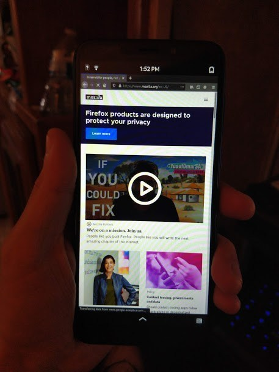

your number one source for linux phone news
~ ~ ~ News | Operating Systems | Software | Devices | Contact Us | About Us ~ ~ ~
Like many of the other Linux phone distros, Arch Linux ARM for PinePhone comes with the Phosh user interface. The Arch experience on PinePhone is exceptionally smooth. It does, of course, retain the simplicity of Arch when you want to make sure your software is up to date with one simple command (note - In this port, the sudo command does not come preinstalled, so you will need to be root to update/upgrade):
pacman -Syu
...and that's it! Firefox scales very well in this PinePhone port in comparison to other mobile distributions, so you can do desktop browsing with ease, or stream your favorite videos on your PinePhone.
If you have a PinePhone of your own and love Arch Linux, why not give it a spin? You can grab the latest image by clicking the button below from the project’s official GitHub repository. Once it is downloaded, just flash it to your SD card and boot it up!